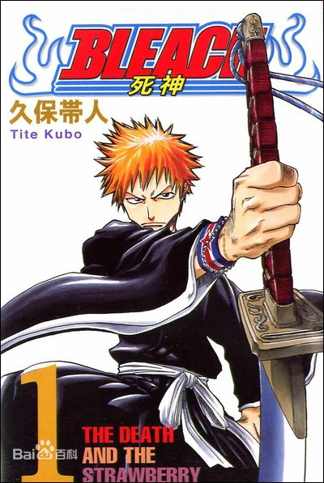
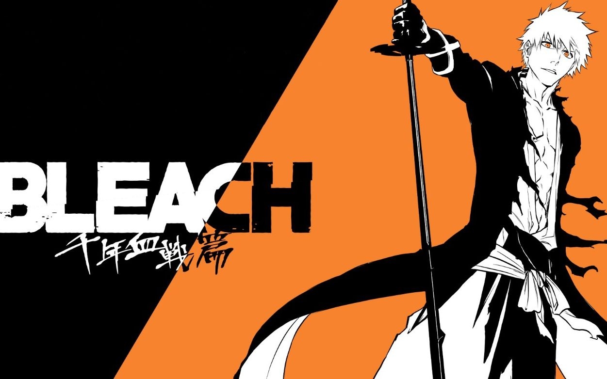
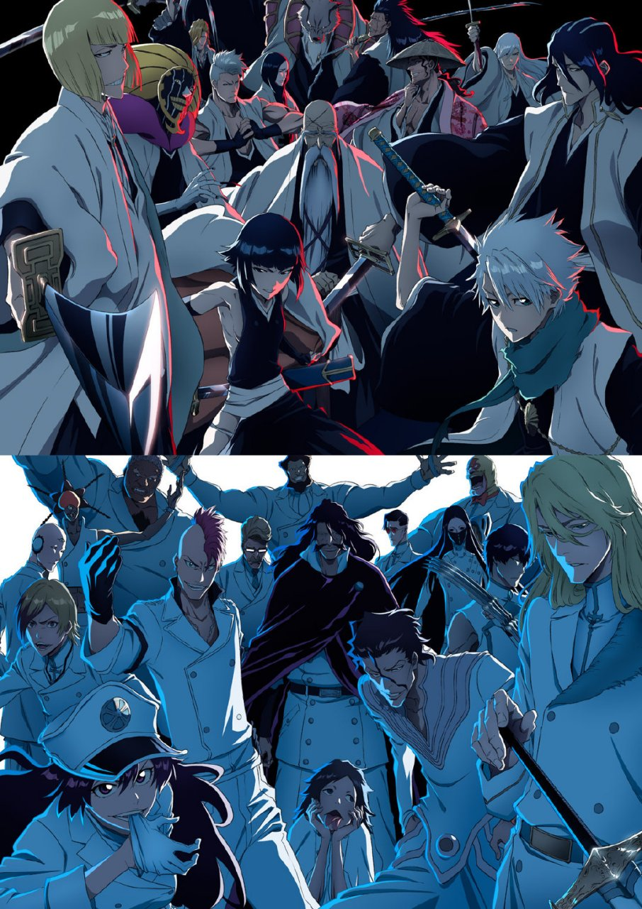
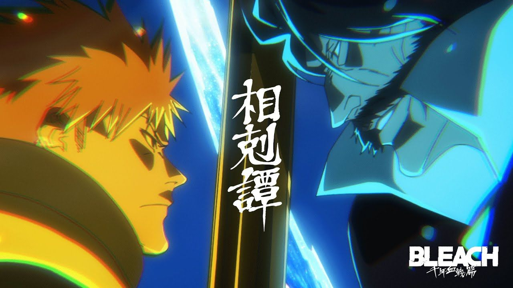

 《bleach》这部动漫大家很可能没看过，国内动画版起初将其翻译为《死神》，说到这里 你也许会想起风靡于小学时候的一款小游戏“死神vs火影”。实际上这款游戏中的“死神”即 来自于《bleach》动漫。早在十多年前，《bleach》与《火影忍者》《海贼王》被民间 并称为“三大民工漫”，然而不久后《bleach》在国内被禁播，人气下降，渐渐无人知晓。 即使后来优酷买下版权，更名为《境·界》，也无法改变其颓势。
十年后，在2022年10月10日， 原动画未完结的部分《死神·千年血战篇》开播，热度再次上涨，我也顺势为大家介绍这部动漫。 下文使用《死神》称呼这部动漫，这也是广为人知的名字。
《死神》的世界分为三大部分——现世、尸魂界、虚圈，分别是人类、死神、虚生存的地方。 在《死神》的世界观下，人类死后会变为魂魄前往尸魂界，再由尸魂界分配魂魄，或者是心中仍有怨念而变为虚。死神的职责是维持两界的魂魄平衡， 虚会吃下人类的灵魂，因此死神需要斩杀虚来保护人类。但死神斩杀虚并非消灭，而是将其灵魂带到尸魂界。 灭却师是人类中的特殊种族，他们痛恨虚，因此觉醒了强大的力量直接消灭虚，这会影响两界的魂魄平衡， 从而千年以来死神和灭却师始终对立，最终死神几乎剿灭了所有灭却师。
故事讲述了主角黑崎一护的冒险经历，他是一个能看见灵体的普通高中生，某天意外获得了死神的力量。以下为主要篇章。
死神代理篇：某一个夜里，死神朽木露琪亚追踪虚时来到了一护家里，一般来说普通人看不见死神这种灵体形态，但一护看见了露琪亚，露琪亚
只好为其解释死神与尸魂界的概念。随后，虚攻击了一护的妹妹，一护不顾一切冲向虚，露琪亚为了保护一护深受重伤。
为了击败虚，露琪亚将死神之力传递给一护，一护从此成为死神代理，在空座町这座城市斩杀虚保护人类。
尸魂界篇：露琪亚因借死神之力于人类而被尸魂界判处死刑。一护主角团闯入死神的世界——尸魂界，与死神们战斗，试图阻止露琪亚的处决。
最终露琪亚未被处决，然而这一切都是潜伏在护廷十三队中的大反派——蓝染惣右介的阴谋，只为得到一个足以毁灭世界的关键物品——崩玉。
篇章最后，蓝染与另外两名队长背叛尸魂界，前往虚圈，准备他们计划的下一步。
破面篇：新的敌人——破面出现，他们是虚的进化形态，拥有与死神相似的力量。破面们来自虚圈，而虚圈已经被蓝染彻底统治。
蓝染趁死神与破面激烈战斗之时掳走了主角团中的井上织姬。一护一行人为了营救织姬闯入虚圈，与强大的破面们展开战斗。
然而这也是蓝染的阴谋，蓝染利用破面拖住一护，自行前往现世，与护廷十三队展开空座町大战，几乎击败了所有死神。
最终，为了保护整个世界，一护放弃全部的死神力量，以获得“最后的月牙天冲”，斩杀蓝染。
完现术篇：一护失去了死神之力，他不再能够保护他人，这让他感到抑郁。这时一个神秘组织——Xcution找上了他，告诉他
人类也可以觉醒完现术的力量，并帮助一护学习完现术。但一护被算计了，组织老大银城空吾夺走了他的完现术力量，
还利用组织中月岛秀九郎的力量让一护的朋友们纷纷背叛了一护。一护绝望万分，痛哭流涕，这时露琪亚居然出现在他身后，
整个尸魂界合力赠与一护死神力量。重获死神力量的一护以碾压的实力斩杀了银城空吾。
千年血战篇：这是《死神》的最终篇章，讲述了死神与灭却师之间的千年恩怨。千年前被死神封印的灭却师之王再次苏醒，
意图占领整个世界。一护主角团和尸魂界全体合力对抗灭却师大军，空前激烈的战斗由此打响。
主角团中的石田雨龙身为灭却师，背叛了一护，一护将何去何从？（漫画已完结，动画未完）
精彩的战斗场面:作为十多年前的热血少年漫,自然和《火影忍者》《海贼王》
等具有相同的特质。然而《死神》在打斗的刻画上相比于前两者更加仔细，战斗部分在全剧占比极高，
节奏紧张快速，不拖泥带水，尤其是新播出的《死神·千年血战篇》，不是在战斗，就是在准备战斗，让人观看时不敢分神。
独特的世界观《死神》构建了一个融合了现代元素和日本传统鬼怪文化的复杂世界，包括死神、虚、魂魄、尸魂界等。
这些世界观基于现实迷信，不难理解的同时还能继续深挖。
丰富的角色群：《死神》拥有众多个性鲜明的角色，无论正派反派，每个角色都有自己的背景故事和成长轨迹。
这些丰富的角色也为《死神·千年血战篇》奠定了基础，把“血战”刻画的淋漓尽致。
风格多样的音乐：《死神》的音乐也是其特色之一，背景音乐和主题曲往往能够增强剧情的氛围和情感。例如著名的燃曲《Number One》，
在《死神》中常常是主角登场或者主角将要击败敌人时播放，《死神·千年血战篇》对其进行了重置，使其节奏感更强，情绪更加高涨。
哲学和隐喻：作品中包含了许多哲学思考和隐喻，使得《死神》不仅仅是一部简单的热血动漫，而是具有更深层次的内涵。
例如，实际上尸魂界隐喻了封建社会，尸魂界的许多问题都是由贵族引发，表达了对封建社会顽固不化的一种批判。
2024年12月7日晚11点，《死神·千年血战篇·相剋谭》将会更新第10集。在这之前，2022年10月10日， 《死神·千年血战篇·新篇章》开播，2023年7月8日，《死神·千年血战篇·诀别谭》开播，这两部均已完结。 《死神·千年血战篇》每一季都有13集，相比《死神》集数少了很多，但节奏也加快了不少。我希望看到这里的你， 能够去观看《死神·千年血战篇》，一定不会让你失望。
  